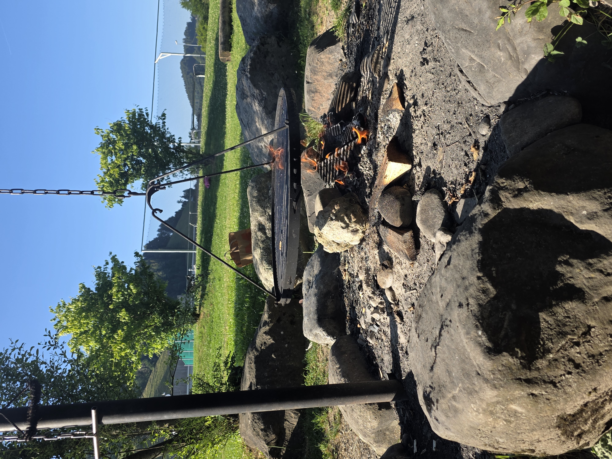
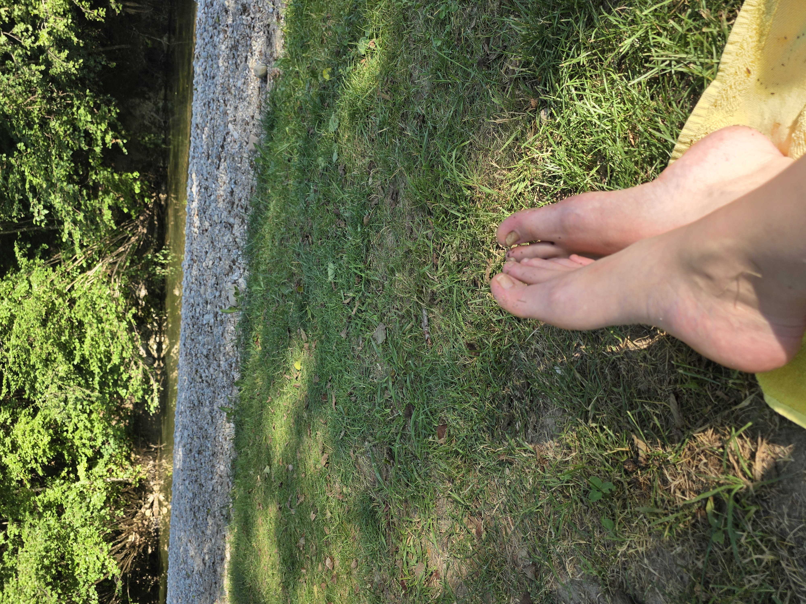

Früher hätte ich an einem Tag wie heute im Büro geschwitzt. Heute Abend stand ich barfuss am Bach.

Mum Life Balance
01 Hook

Heute Abend
Überall Hitzerekorde heute. Also hab ich am Abend den Laptop zugeklappt, die Kinder geschnappt und wir sind runter an den Bach — Füsse ins kühle Gras, ins Wasser und ein Feuer für die Würste.
Mum Life Balance
02 Story-Szene
Ganz ehrlich
Und ja, das ist ein Privileg. Vor drei Jahren ging das nicht. Da hing ich an diesem ewigen „hoffentlich kann ich morgen arbeiten gehen, hoffentlich wird keins der Kinder krank". Spontan an den Bach wär einfach nicht drin gewesen.
Mum Life Balance
03 Vorher
Was sich geändert hat
Viele denken, sie müssten einfach mehr tun — den nächsten Kurs kaufen, das Reel um Mitternacht drehen — und kommen trotzdem nicht vom Fleck. Bei mir wurde es leichter, als ich endlich wusste, wofür ich stehe und für wen. Vorher hatte ich Follower und keine einzige Kundin.
Mum Life Balance
04 Denkfehler
Und du?
Was wäre, wenn dein Profil in fünf Tagen sagt, wofür du stehst — so dass sich die richtigen Frauen bei dir melden? Dann kannst auch du an einem Tag wie heute einfach mal früher Schluss machen.
Mum Life Balance
05 Vision
Ehrliche Frage
Was hält dich gerade noch fest?
↓ Tipp deine Antwort in den Sticker
Ich weiss nicht, wofür ich stehe · Ich poste, aber keiner meldet sich · Mir fehlt der rote Faden
Mum Life Balance
06 Frage
Deshalb mach ich das
Genau dafür gibt's mein kostenloses 5-Tage-Mama-Business-Bootcamp. Du baust deinen ersten klaren Schritt — deine Bio und deine ersten Hooks — live für DEIN Business, mit PIA, meiner KI-Mentorin, an deiner Seite. Wir starten am Montag, den 29. Juni.
Mum Life Balance
07 Lösung
Bootcamp-Start
4
Tage
Fünf kostenlose Tage — wir starten Montag, den 29. Juni.